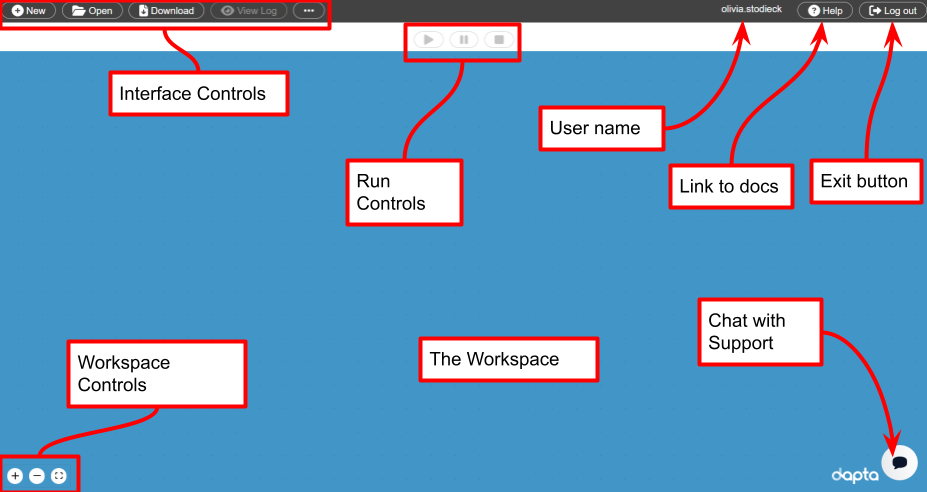

控制面板#
控制面板是一个图形化的网页界面，允许用户创建、编辑、执行和检查一次分析运行的输出。 要访问您的控制面板，请打开一个网页浏览器并访问 https://www.dapta.com 。 然后使用您的用户名和密码登录，并单击出现在网站菜单中的【控制面板】按钮。
{kind=link}
界面控制#
新建 : 重置工作区。完成一次运行后，也可使用此功能从云端删除您的会话。
打开 : 通过上传一个JSON格式的会话定义文件，打开已保存的工作区会话。
下载 : 下载当前会话的JSON格式版本以及运行日志（如果有）。
查看日志 : 查看当前的运行日志（如果有）。
... : 查看次要控件、有用链接和新功能菜单列表。
工作区#
在工作区中右击鼠标打开工作区内容菜单。选择【添加空节点】选项将空模板组件添加到会话中。
滚动鼠标滚轮以放大或缩小视图。
选择工作区控件**+和-以放大和缩小，或者选择◻**调整所有组件以匹配当前视图。
组件#
组件被定义为在工作区中显示为方框的计算块。 可以选择一个组件进行编辑。
每个组件都有一个名称，显示在组件方框的顶部。 名称旁边出现的符号表示组件的有效性状态：
? : 待处理 : 一些输入缺失。
🗸 : 有效 : 所有必要的输入已被定义。
! : 无效 : 一些输入错误。
连接#
一个连接被定义为从源组件输出句柄（右侧）到目标组件输入句柄（左侧）的数据链路。连接类型有三种：
Design variable connection (设计变量连接): 在组件之间传递设计变量值（仅限数字或数字数组）。在工作区视图中，它们显示为黑色箭头。更新后的变量在每次起点组件计算迭代后被传输，这是默认的连接类型。
Implicit variable or file connection (隐式变量或文件连接): 在组件之间传递隐式变量（任何JSON可序列化对象）或文件。在工作区视图中，它们显示为绿色箭头。更新后的变量在每次起点组件计算迭代后被传输。这是文件连接的默认连接类型。
Setup variable or file connection （设置变量或文件连接）: 在组件之间传递设置变量（任何JSON可序列化对象）或文件。在工作区视图中，它们显示为蓝色箭头。更新后的变量只在所有组件完成设置之后、目标组件的第一次计算之前被传输一次。
通过连接传输的数据必须是JSON可序列化的Python对象（这包括大多数Python数据类型）或文件引用。文件引用键以前缀"files."开头。
有效连接#
计算功能将始终按照从单个【开始节点】到单个【结束节点】的顺序执行。这意味着【开始节点】可能没有任何传入连接，而【结束节点】可能没有任何传出连接。驱动程序组件不能有任何连接。
运行控制#
▶ / 启动: 启动一次新的运行。仅当所有组件有效时，此选项才可用。